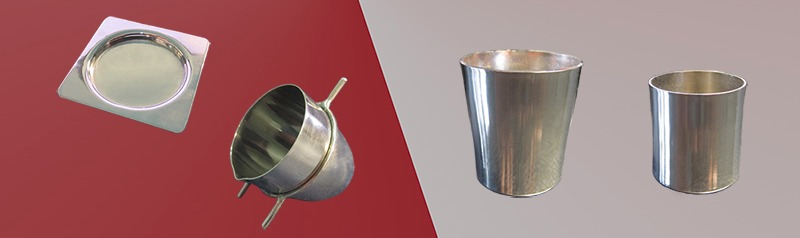
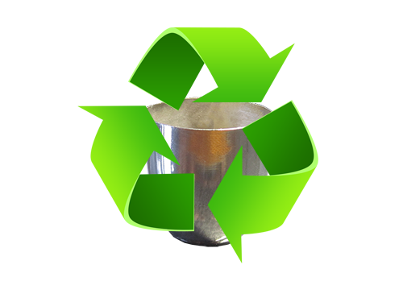

Located in Athens Greece, Ptaino has been the local supplier of platinum laboratory equipment for more than twenty years. Our products cover a variety of solutions such as platinum crucibles, lids, moulds, XRF and analysis dishes. The alloys we provide contain gold, palladium, rodium and iridium. We can also recycle your used platinum labware equipment and thus lower the cost of your future orders. Whatever your challenges are, our experienced team is here to support you and bring the best custom solution to your business.

Recycling plays a significant role when buying new platinum labware, as it covers a major part of the total cost. After we receive your used platinum labware, we will provide an estimate of your used platinum material giving you the best possible value. This way you will have a significant lower cost when buying new platinum crucibles or any other product. Of course, the metal can also be returned in physical form, sold for full credit or held on account to fulfill future orders and provide shelter from metal price fluctuations. Minor metals extracted from your scrap such as gold, silver, palladium, iridium and rhodium can be used either as material for your new platinum labware or add to the discount.

In Ptaino we believe that all customers have their own specific needs and we always try to deliver the best possible solution for them. We construct new platinum labware equipment and reconstruct old ones. Our range of products vary from platinum crucibles, lids, moulds, XRF and analysis dishes. The dimensions of your new platinum labware can be simply the same as your old labware equipment or created based on your given specifications. For the platinum labware we provide the following alloys: Platinum-Gold, Platinum-Palladium, Platinum-Iridium, Platinum-Rhodium.